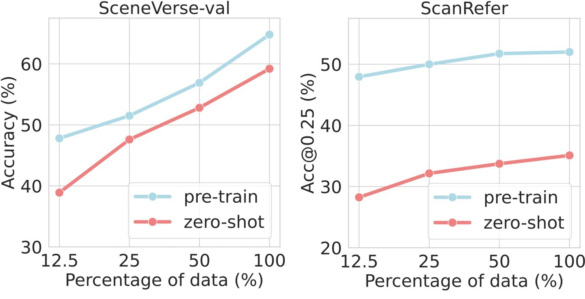

Model

Grounded Pre-training for Scenes (GPS) is a transformer-based model trained with multi-level contrastive losses for aligning 3D scenes and texts. We echo the language descriptions collected to form scene-language pairs at both object-level, referral-object-level, and scene-level for contrastive objectives in GPS. The resulting model shows scaling effect in pre-train/fine-tune and zero-shot settings.
Data Explorer
To use the interactive data explorer, first select from the available scenes in the select bar and then choose a type of language description
available in the buttons.
Options: Click + Drag = Rotate, Ctrl + Drag = Translate, Double Click = Select Object (Best viewed on monitors)